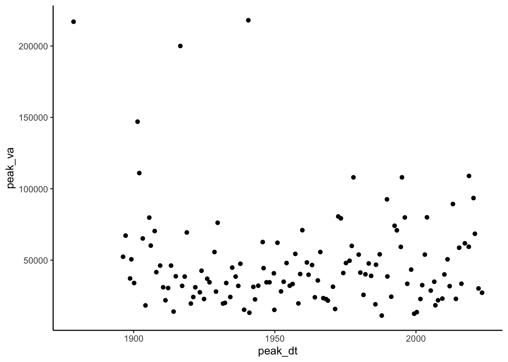
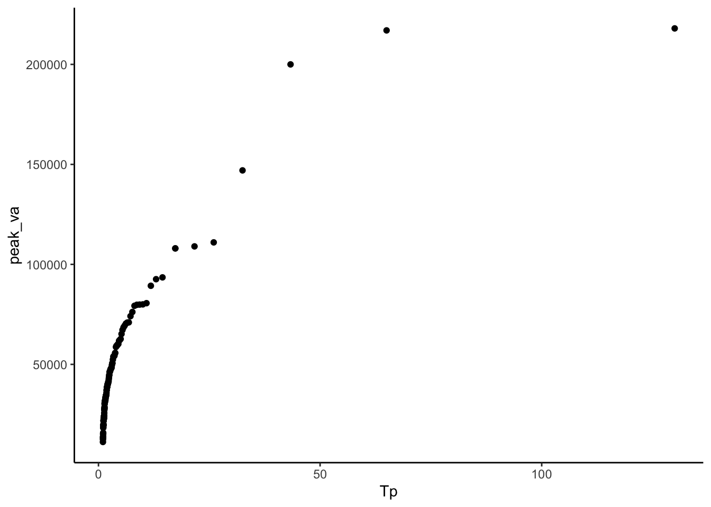
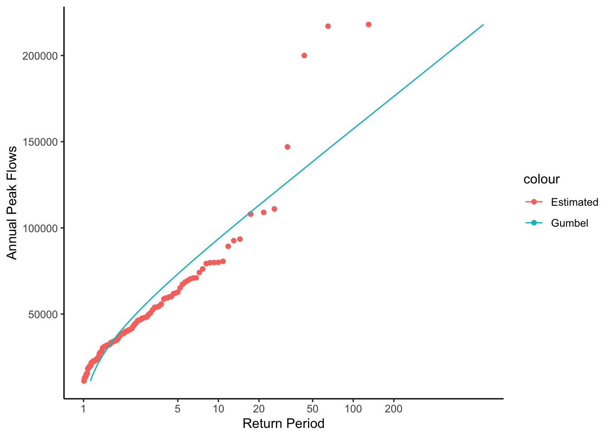
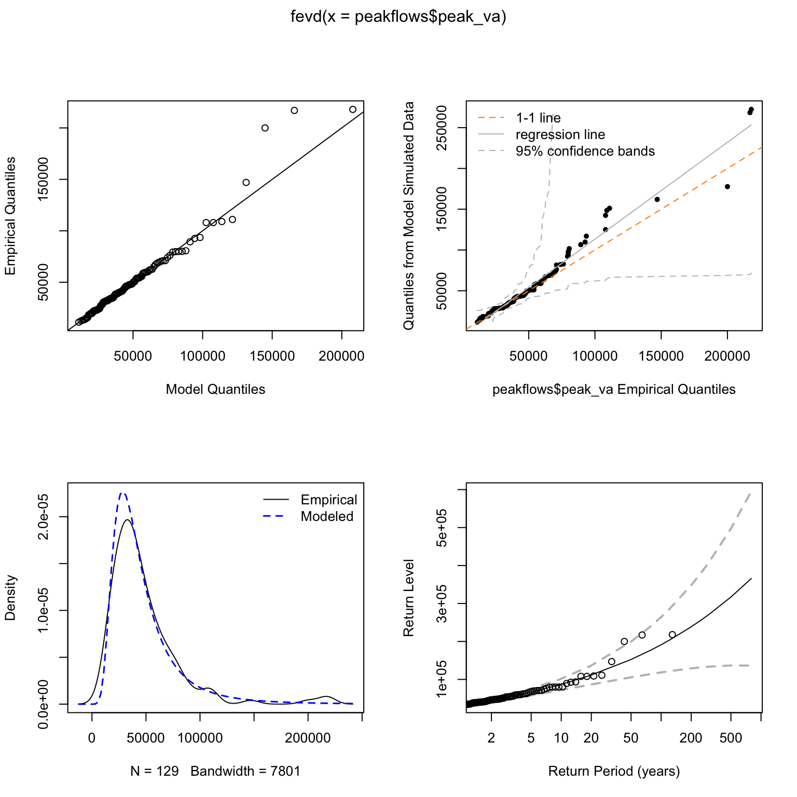

library(tidyverse)
library(dataRetrieval)
library(extRemes)
library(modelr)
theme_set(theme_classic())11 Flood Frequency Analysis and Creating Functions
11.1 Template Repository
The following activity is available as a template github repository at the following link:
11.2 Intro
This methods for this chapter are adapted from the following activity: https://serc.carleton.edu/hydromodules/steps/166250.html
After working with Flow Duration Curves (FDCs) and performing a low flow analysis, we now understand all the concepts necessary to perform a flood frequency analysis. In this chapter we will perform a flood frequency analysis using a Gumbel extreme value distribution and then write our own function that will return the magnitude of whatever probability flood we want!
First we will load the tidyverse and dataRetrieval packages and the set the theme for our plots.
Next, download the yearly peakflow data from USGS dataRetrieval using the readNWISpeak() function. We don’t have to create our own yearly values like we did in the low flow analysis. This function just returns the highest flow for each year.
Download the data for the New River at Radford.
Then make a plot of the peak flow for each year.
radford <- "03171000"
peakflows <- readNWISpeak(radford)
ggplot(peakflows, aes(peak_dt, peak_va))+
geom_point()
As with the couple previous chapters, the next step is to create a column that contains the ranks of each flow in the record. Create a column that has the rank of each flow, with the highest flow ranked #1. Use select() to trim your dataset to just the peak data, peak values, and ranks columns.
Make the plot from the last code chunk again but color the points by rank to check that this worked. Also, look at the data through the environment tab in rstudio or using head() to double check.
#create rank column (minus flips the ranking)
#then clean it up, pull out only peak value, date, rank
peakflows <- peakflows |>
mutate(ranks = rank(-peak_va)) |>
select(peak_dt, peak_va, ranks)
#look at it
ggplot(peakflows,
aes(peak_dt, peak_va, color = ranks))+
geom_point()head(peakflows) peak_dt peak_va ranks
1 1878-09-15 217000 2.0
2 1896-04-01 52400 40.0
3 1897-02-22 67200 24.0
4 1898-09-23 37200 70.0
5 1899-03-05 50600 41.5
6 1900-03-01 34000 78.5Now we need to calculate the exceedance probability and return period for each value in our data. For flood frequency analysis, it is common to use the Weibull plotting formula:
\(Tp = (N + 1) / m\)
\(Tp\) = Return Period
\(N\) = Number of observations in your record
\(m\) = Rank of specific observation, m = 1 is the largest, m = N is the smallest.
And the return period is the inverse of the exceedance probability so:
Exceedance probability = \(p = 1 / Tp\)
Non-exceedance probability = \(pne = 1 - p\)
In the chunk below, create a column in your dataset and calculate each: exceedance probability, non-exceedance probability, and return period.
Then make a plot with peak flow on the Y axis and Return Period on the X.
N <- length(peakflows$peak_dt)
#calculate return period, exceedence/non-exceedence with Weibull
peakflows <- peakflows |>
mutate(Tp = (N + 1)/ranks,
pe = 1 / Tp,
pne = 1 - pe)
#Plot peak flows on y and est return period on the x
peakflows |>
ggplot(aes(x = Tp, y = peak_va)) +
geom_point()
Now we need to fit these data to a distribution in order to make a relationship we can use to predict the discharge of specific return intervals.
There are many distributions that can be used in this situation, but a common one for flood frequency analyses is the Gumbel extreme value distribution:

x is observed discharge data, u and x are parameters that shape the distribution.
We can calculate u and x in order to create a distribution that best fits our data with the following equations. Notice x bar is mean and sx2 is variance. We will need to find sx, which is the square root of the variance, also known as the standard deviation.
In the chunk below, calculate u and alpha by first calculating xbar (mean) and sx (standard deviation) and then using them in the above equations for u and x.
xbar <- mean(peakflows$peak_va)
sx <- sd(peakflows$peak_va)
alpha <- (sqrt(6)*sx) / pi
u <- xbar - (0.5772 * alpha)Now that we have the parameters that best represent our data as a Gumbel Distribution, we can use the formula to create the theoretical values for the return interval according to that distribution.
In the chunk below:
First calculate non-exceedance probability with the equation above.
Then calculate Tp theoretical (the return period) as T was calculated above Tp = 1 / (1-p)
Finally create a plot of return period on the x axis and peak values on the y. Include return periods calculated from your data and those calculated from the Gumbel distribution on your plot as points of different colors.
peakflows <- peakflows |>
mutate(
pne_gumbel = exp(-exp(-((peak_va - u) / alpha)))) |>
mutate(Tp_gumbel = (1 / (1-pne_gumbel)))
peakflows |> ggplot() +
geom_point(aes(x = Tp_gumbel, y = peak_va, color = "Gumbel"))+
geom_point(aes(x = Tp, y = peak_va, color = "Estimated"))+
ylab("Annual Peak Flows")+
xlab("Return Period")+
theme_classic() 
Let’s look at these data a slightly different way to make it easier to see what is going on and how we can pull of flows for different return periods.
Make the same plot as above but show the Gumbel distribution values as a line, with the estimated values as points, and log the x axis with limits set to 1 - 100. Save this plot, we will add to it later.
With this plot you could look up the return period for any flood or the discharge level for any return period.
peakplot <- peakflows |>
ggplot() +
geom_point(aes(x = Tp, y = peak_va, color = "Estimated"))+
geom_line(aes(x = Tp_gumbel, y = peak_va, color = "Gumbel"))+
ylab("Annual Peak Flows")+
xlab("Return Period")+
scale_x_log10(breaks = c(1,5,10,20,50,100,200))+
theme_classic()
peakplot
This plot is showing a representation of the fitted distribution by calculating the return period for each point in our dataset. But we can also use it to calculated the specific flow that corresponds to any return period by using the established relationship.
In the chunk below, calculate the magnitude of a 1 in 100 chance, or 100 year flood using the following two formulas where p = non-exceedance probability and Tp = return period. These are just the equations used to calculate return period rearranged to calculate peak flow.
p = 1 - (1 / Tp)
peakflow = u - (alpha * ln(-ln(p)))
(log() in r is the natural log, log10() is base 10 log)
According to this flow, what is the 1 in 100 chance flood at this location? Do you see any issues with reporting this as the 1 in 100 chance flood? What are they?
Tp = 100
pne = 1 - (1/Tp)
peak_va = u - (alpha * log(-log(pne)))The gumbel distribution fit for the New River at Radford isn’t great. Fortunately there are ways to find an appropriate fit.
The generalized extreme value distribution will fit a much wider range of extreme value distributions. The distribution has three parameters:
location, scale, and shape
When the shape parameter is 0, the GEV is the same as the Gumbel Distribution. If it is greater than 0, the GEV is the the same as the Type II extreme value distribution. If it is less than 0, the GEV is the the same as the Type III extreme value distribution
Fitting data to this distribution is much more complex than what we did above with the Gumbel, but there are stats packages available that will do it for us.
Here we will use the fevd() function from the extRemes package to fit a generalized extreme value distribution to our data.
Below, do the following - Pass the peak flow values to fevd() and save the result as “GEVD”. This will save all the outputs from fevd() so we can use them in a few different ways.
Pass the “GEVD” object to summary() and then plot(). You can see the GEVD object includes the three parameters: location, scale, and shape. plot() also shows you how well the fit turned out using several plots.
Save the location, scale, and shape parameters. You get them out of the GEVD object using the following syntax: GEVD$results$par[#] where # is 1: Location, 2: Scale, 3: Shape. (if you are looking at the syntax in an un-knitted rmd, ignore the backslashes)
Based on the parameters from the fit, what type of extreme value distribution best fits the New River data?
GEVD <- fevd(peakflows$peak_va)
summary(GEVD)
fevd(x = peakflows$peak_va)
[1] "Estimation Method used: MLE"
Negative Log-Likelihood Value: 1478.643
Estimated parameters:
location scale shape
3.243469e+04 1.679966e+04 2.824642e-01
Standard Error Estimates:
location scale shape
1.688961e+03 1.419770e+03 7.949888e-02
Estimated parameter covariance matrix.
location scale shape
location 2852588.84028 1.501585e+06 -40.722126890
scale 1501585.06140 2.015746e+06 -4.189323634
shape -40.72213 -4.189324e+00 0.006320071
AIC = 2963.286
BIC = 2971.865 plot(GEVD)
location <- GEVD$results$par[1]
scale <- GEVD$results$par[2]
shape <- GEVD$results$par[3]We can now calculate flow magnitudes for the non-exceedance probabilities in our peakflows data using the function qevd(). Use a mutate to add a column of flows calculated from qevd, using the parameters from your distribution fit (location, scale, shape) and the non-exceedance probabilities calculated earlier (the pne column in the peakflows data).
peakflows <- peakflows |>
mutate(
GEVDflows = qevd(
p = pne,
loc = location,
scale = scale,
shape = shape))Now add a line showing flows you just calculated to the plot we made above showing the Gumbel fit. Does this approach work better in this case?
#add a line to the plot above that shows the Gumbel fit
peakplot +
geom_line(data = peakflows, aes(x = Tp, y = GEVDflows, color = "GEVD"))
Finally, we can calculate the magnitude of a flow with a specific return interval using the same qevd() function. If we want the 1 in 100 chance flood. Our return interval would be 100 and the non-exceedance probability would be 0.99 (pne above). Pass qevd this probability value and the location, scale, and shape parameters you got above to get the 1 in 100 chance flood magnitude.
How is this different from what we calculated above? Do you think it is more accurate? Why?
#p from above is the
qevd(p = .99,
loc = location,
scale = scale,
shape = shape)location
191056.2 This is a good opportunity to illustrate the usefulness of writing your own functions. When you install packages in R, you get a bunch of functions you can use. But you can also create these on your own to simplify your analyses!
You do this with the following syntax >MyNewFunction <- function(param1, param2){ >code >}
Whatever the last line of the “code” portion of the function spits out, get’s returned from the function. So if you said X <- mynewfunction(param1, parm2) X would now have it in whatever your function returned. See a simple example below: a function that adds 1 to any number we pass to it.
add1 <- function(number){
number + 1
}
add1(4)[1] 5Let’s create a function that returns the return period for a flood of any magnitude for the gage we are investigating. Creating functions is a great way to streamline your workflow. You can write a function that performs an operation you need to perform a bunch of times, then just use the function rather than re-writing/copying the code.
Our function will be called “ReturnPeriod” and we will pass it the flow we want the return period for, and the u and alpha of the distribution.
We will test the function by having it calculate the return period for the 100 year flood we calculated earlier (120027). If it works, it should spit out 100.
ReturnPeriod <- function(flow, u, alpha){
pTheoretical = exp(-exp(-((flow - u) / alpha)))
TpTheoretical = (1 / (1 - pTheoretical))
TpTheoretical
}
ReturnPeriod(158349, u, alpha)[1] 103.329711.3 Challenge: Create a function
Create a function that returns the 100 year flood when given a USGS gage id. Use the generalized extreme value distribution fit function to do this.